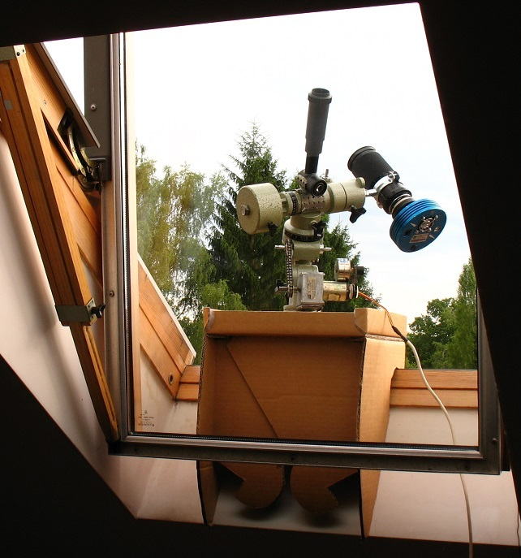
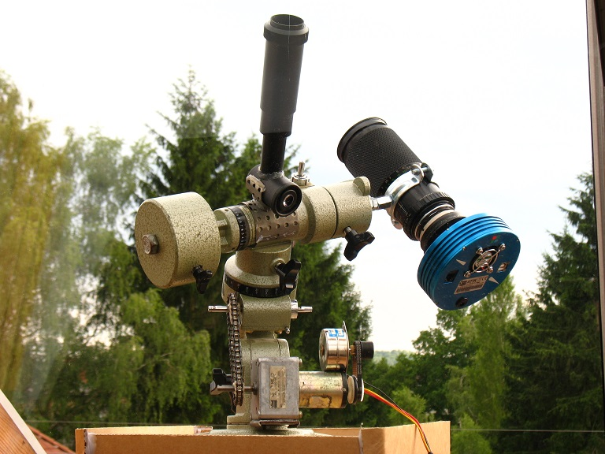
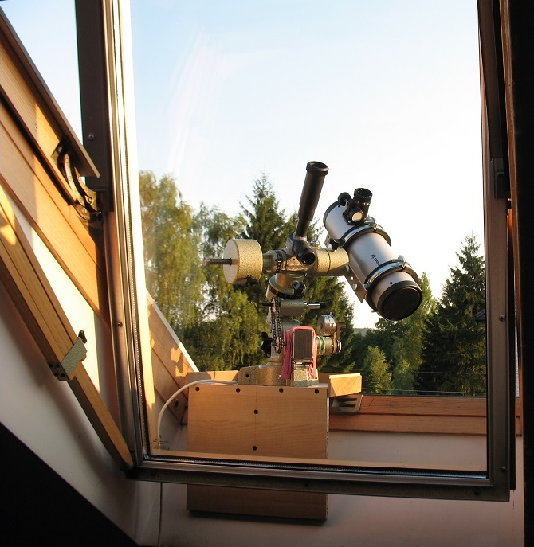
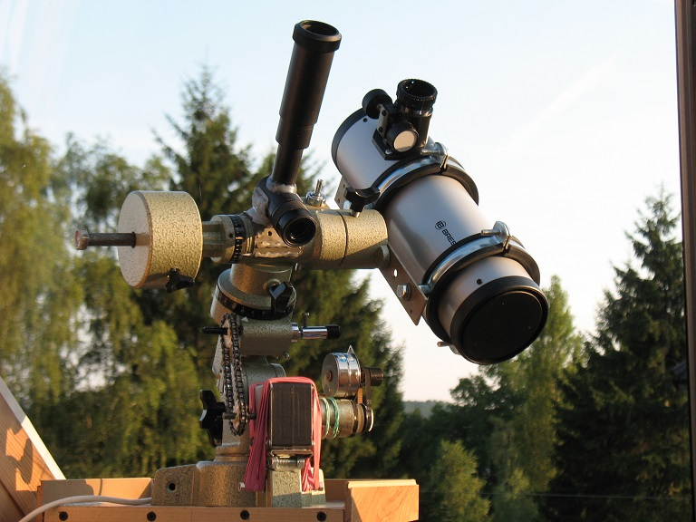
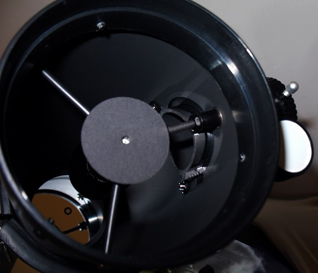

.
ASTROFOTOGRAFIA Z PARAPETU OKIENNEGO
|
Astrofotoparapetografia :D czyli Parapetówka w akcji Czy to możliwe, aby prostą astrofotografię DS uprawiać z parapetu okiennego ? Oczywiście, że tak. A jak to się robi? Kupuje się średniej klasy montaż, odkręca mu nogi, daje krószy pręt przeciwwagi, wiesza na nim lustrzankę lub kamerkę z obiektywem foto 100-200mm, stawia się to na parapecie i gotowe. OPIS Kiedy mieszkałem w bloku i miałem do dyspozycji prosty i sztywny kamienny parapet, otwierałem wtedy na oścież okno i stawiałem na parapecie poniższy zestaw, siedząc obok przy biurku, oddawałem się swojemu ukochanemu zajęciu. Miejszkając obecnie w domku, posiadam do dyspozycji okna dachowe, dają one większe pole widzenia, jednak nie posiadają parapetów, zaszła więc konieczność skonstruowania stosownego podestu który stanowił by stabilną podstawę dla zestawu. Całość wygląda jak poniżej na zdjęciu. Kartonowy prototyp   Docelowe drewno   Zestaw jest spartański, montaż beznadziejny (Optisan) lecz w tamtych czasach nie było jeszcze takiego wyboru jak teraz. Powyższa prezentacja ma jedynie zaszczepić koncepcję, która przy użyciu EQ5 lub mu podobnych i najnowszych kamer CMOS winna zaowocować ciekawymi wynikami u naśladowców :) Przy okazji, mała recenzja Bresser Junior 76/350 Dobson, którego zakupiłem z ciekawości, oraz pod kątem adaptacji do budżetowego astrofoto średniej skali. R E C E N Z J A Jak na taką zabawkę jest porządnie wykonany, blacha tuby bardzo twarda i sztywna, plastiki też lepszy gatunek. Okulary z zestawu od wejścia nadają się na śmietnik. Niestety lusterko kątowe jest tak małe że obsługuje nam jedynie ok 40mm zwierciadła głównego, czyli że nawet na samym środku obrazu nie mamy pokrycia 100% i mamy tak naprawdę teleskop 40/350. Ja zamontowałem do niego własne kątowe 32mm (krótsza przekątna elipsy) daje ok 10mm krążek pokrycia 100% w wyciągu. Dodałem na przedzie kartonowy krążek aby mieć centralną/symetryczną obstrukcję. Przerobiłem też pająka na trójramienny, ten który jest w zupełności do obserwacji wystarczy ja jednak powiesiłem teleskop do prób foto a tu zonk, gwiazdy mam kreski, przyczyną jednak okazały się drgania lusterka kątowego pochodzace od wentylatorka Atika z chłodzenia (niech żyje bezwibracyjny Maglev ^_^ porażka) dodatkowo też wyszlifowałem w tulei wyciągu wgłębienie o okręgu 76mm tak aby nie wchodził mi on w obrys lustra (patrz zdjęcie) Wyciąg jest plastikowy, ale to w niczym nie szkodzi, do połowy zakresu pracy chodzi naprawdę sztywno. Co do kolimacji, w tak małym sprzęcie raz zrobiona długo trzyma, ale powiem szczerze że wolę 100x kolimować 305/1500 niż takie małe cholerstwo :) ciasnota. Cela główna nie posiada śrub kolimacyjnych, ale to nie problem, wystarczy w blasze tuby ( i tu się szybko przekonacie o jej twardości) pilnikiem iglakiem rozpiłować otworki na podłużne, a pod łebki wkrętów dodać małe podkładki i już można całością spokojnie operować. Parząc przez środkowy otworek pająka (oczywiście po wykręceniu kątowego lusterka) można spokojnie chybotać łożem lustra na boki aż do uzyskania jego osiowości względem tuby. Podsumowując, sprzęt fajny, nie żałuje wydanych 149zł, kupiłem Bessera gdyż wydawał mi się lepiej wykończony niż inne firmy. Zakupiłem go na Allegro, w ten sposób nie przepłaciłem w specjalistycznym sklepie z optyką astronomiczną :)  
|